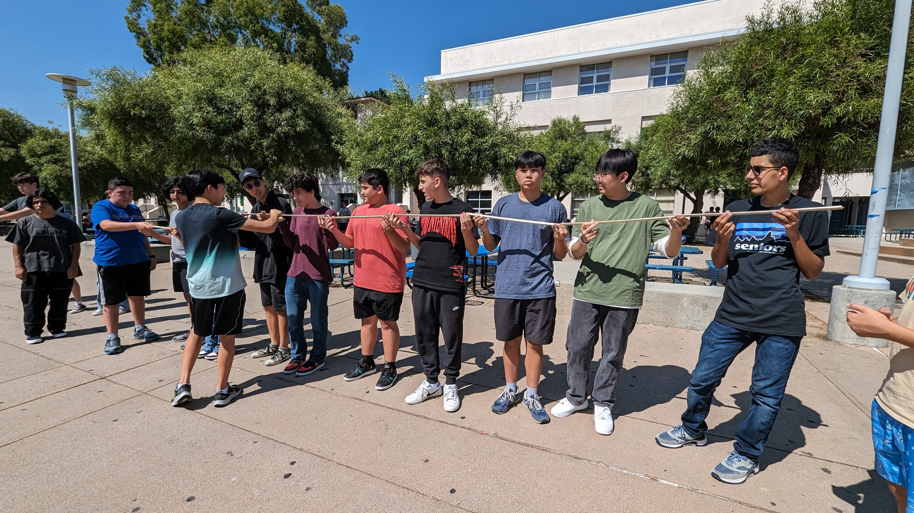
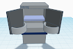
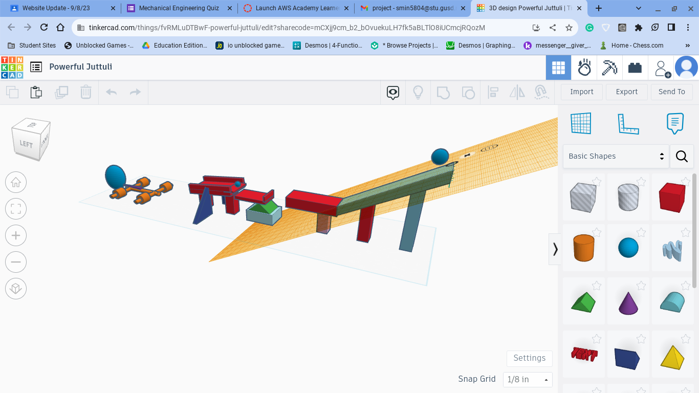
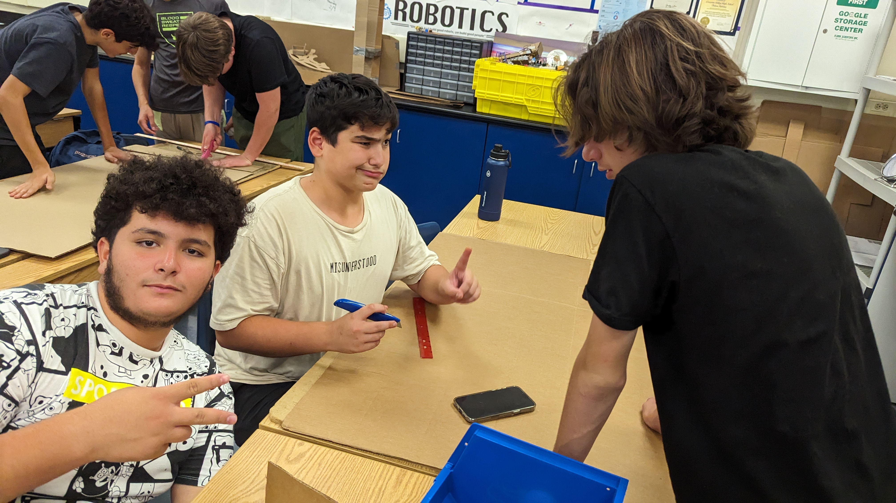

8/25/23 - This week I Learned that working in a team is beneficial, but harder than working by ourselves. From Mr.Pool's first slide I learned about the engineering process and how to correcty use tools. In his second slide I learned how to safely use tools and what equipment I need to wear to stay safe.
This weekend I am going to go to one of my friends house, who moved. This weekend my little cousins will come over to my house to learn to swim.
My Favorite Food Recipe

9/1/23 - This week I learned how to CAD a refrigerator with Tinkercad. On Mr. Pool's slide show I leaned that being safe is the number one rule of this class. I learned that mechanical engineering is the most used engineering out of all the engineering types. When designing my project on tinkercad, I made a fridge. When our entire classes projects were done a judge voted on whoes project was the best. 
9/8/23 - This week I made a Rube Goldberg machine on tinkercad. Mr. Pool put us in groups to make a project that pops a balloon. In my tinkercad project we used a ramp, lever, wheel and axle. My teammates in my group are Joshua Solis and Jack Abrams. We are group 5 and we are going to win because we are the best. The hardest part of the project will be making it in real. 
9/15/23 + 9/22/23 - Last week My group and I made a Rube Goldberg machine in real life. We popped a balloon with a needle which got pushed by a baseball. The hardest part was to make the car move and pop the balloon. The easiest part was making the ramp because all we had to do was cut rectangles. This week We had done two challenges. The first challenge was to make a paper boat and make it flote above water with wieghts on, which we leaned that the best paper boats have to have the most surface area. The second challenge was that we had to make an E and mesure the angles. After making the E we had to trade Es and make the other perosn's E with their mesurments. 